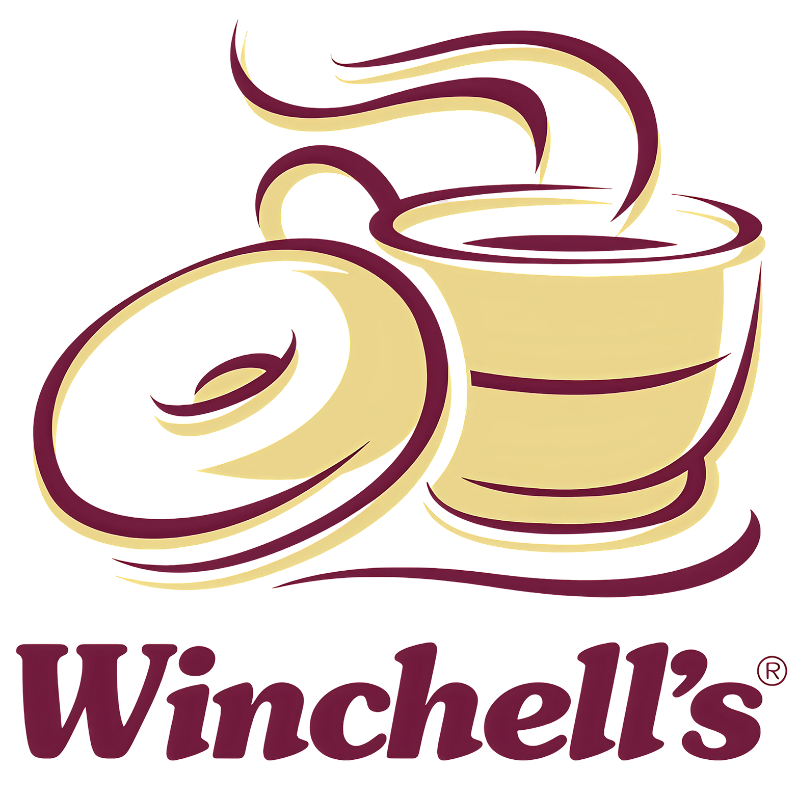
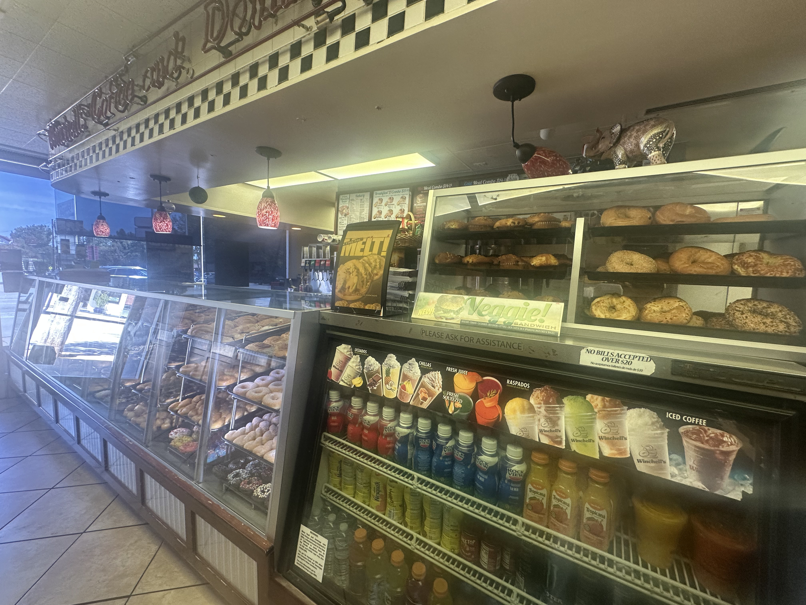
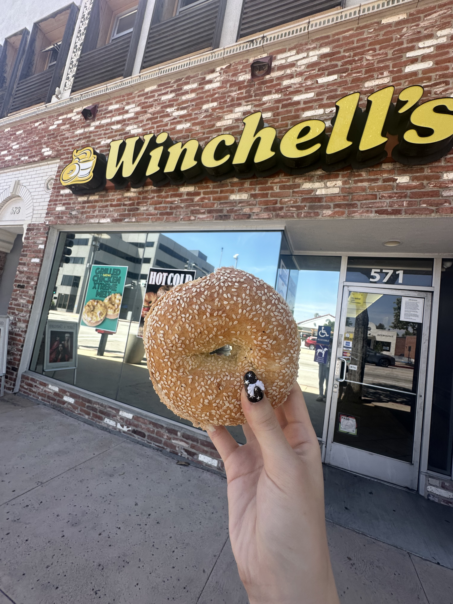
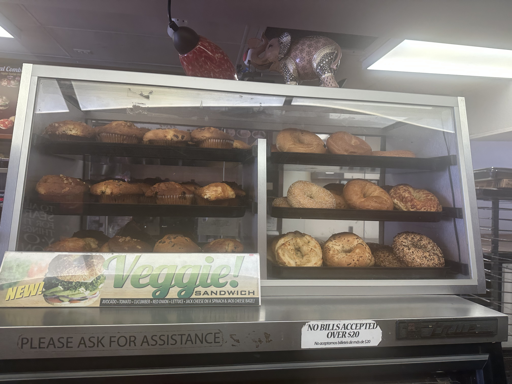

L
L

an old-school donut shop that also does bagels on the side—nothing fancy, just straightforward and nostalgic. i gave their bagels a try to see if they're worth it beyond the donuts.

bagels i tried
garlic bagel
my verdict
everything bagel
my verdict
sesame bagel
my verdict
5/10

's
my 2 crumbs
this was easily the cheapest out of everything i tried, like around $3 a bagel, which is kinda hard to beat. i tried a couple garlic bagels throughout my journey but winchell's had by far the strongest garlic bagel that i still felt lingered in my breath even after i brushed my teeth (wow). but yeah… you can tell. nothing really special, just a very basic, straightforward bagel. the selection is smaller and overall it’s just okay, but for the price it makes sense. would i go again? probably not unless i just wanted something super quick and cheap. it's alright, just not very memorable.

